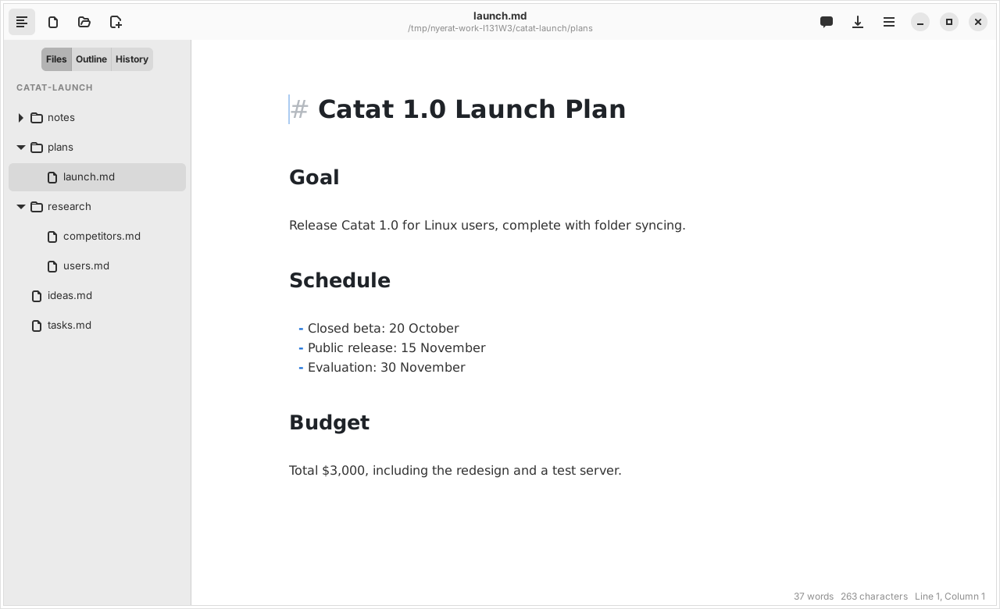

Workspace
Files, tabs, and the sidebar
Open a folder as a workspace, manage its files from the tree, and work on several documents at once as tabs.
The sidebar
Ctrl+\ shows or hides the sidebar. It has three tabs:
- Files: the tree of the work folder with its subfolders and Markdown files
- Outline: the list of headings of the document; click to jump
- History: the Git commits of the open file (Git history)

The file tree
- Open a folder with the folder button in the header bar or Ctrl+Shift+O. The last folder is opened again when the app starts.
- Right-click for New File…, New Folder…, New Kanban Board…, Rename…, and Delete (to the Trash, with a confirmation).
- Drag and drop to move a file or a folder. A conflicting name is rejected without overwriting, and an open document follows its new path.
- The tree updates automatically when a file is added or deleted on disk.
- Hidden files and folders and
node_modulesare not shown.
Many documents as tabs
- Opening a file from the tree or the Open File dialog makes a new tab, or switches to its tab if it is already open.
- Every tab has its own undo history, cursor, and scroll position. The
•mark means it is not saved. - Ctrl+W closes a tab; Ctrl+Tab / Ctrl+Shift+Tab switch tabs.
- When the app is opened again without arguments, the tabs with files are restored with their order, the active tab, and their cursor positions.
- The agent reads the contents of an unsaved tab, not the version on disk.